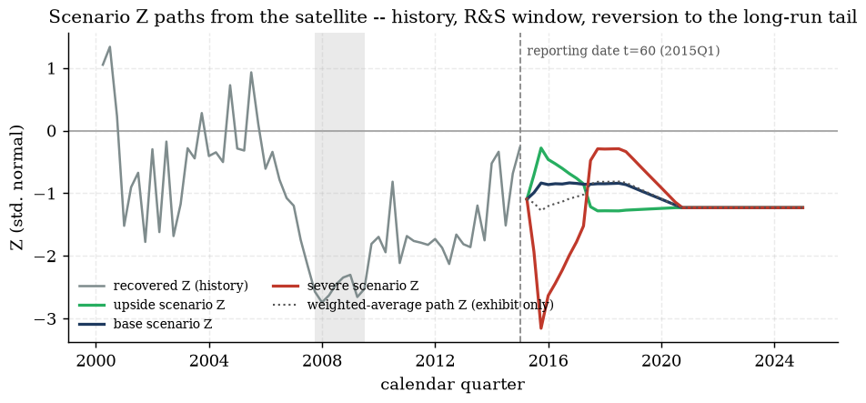
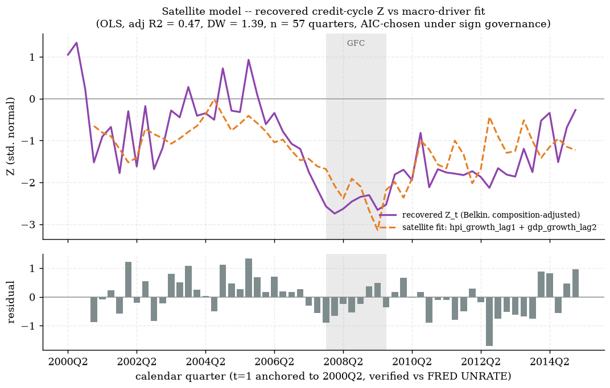
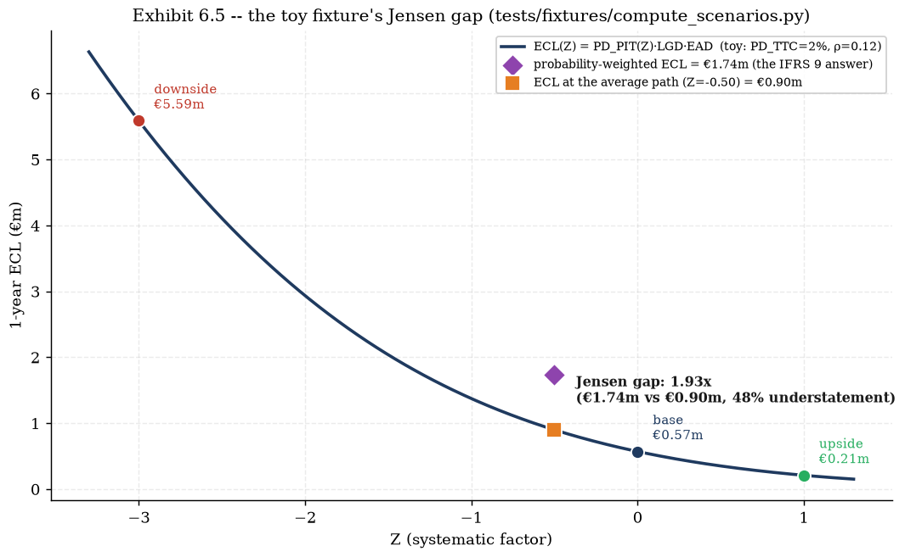
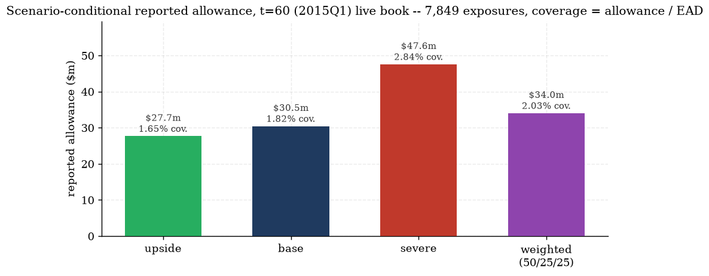

Chapter 5 built the machine that turns a systematic factor $Z$ into a point-in-time PD — but never said
where $Z$ comes from when you are trying to look forward rather than recover it from history. IFRS 9
§5.5.17(c) requires ECL to reflect reasonable and supportable information about future conditions,
and §5.5.18/B5.5.42 goes further: it must be an unbiased, probability-weighted estimate
evaluated across a range of outcomes, not the single most-likely path. This chapter builds the whole
forward-looking rung end to end — ingesting supervisory stress-test paths, fitting a small regression that maps
macro drivers onto the credit cycle, and then proving rigorously (not just asserting) why averaging scenario
outcomes is not the same as evaluating the outcome of the averaged scenario. That gap has a name —
Jensen's inequality — and by the end of this chapter it is derived from first principles, verified on a toy
example, and then measured honestly on the project's own 7,849-loan book. Source anchor:
knowledge/sources/ifrs9_credit_risk_notes.md §9 (all sections); project evidence from
engine/scenarios.py, engine/satellite.py, agent/tools_tier1.py, and the
three outputs/{scenarios,satellite,scenario_ecl}/ reports.
6.1 Why a single base case is not enough
Every hazard model up to this point produces one number per loan-quarter. Feed it one macro path and you get
one ECL. IFRS 9's answer to "which macro path?" is deliberately not "the most likely one" — it is
several, weighted by their probability of occurring.
Definitions.
Scenario — a full, internally-coherent macro path (unemployment, house prices, GDP, rates
all moving together sensibly) over some horizon, standing in for one possible future state of the economy.
Probability weight $w_s$ — the bank's own governance-committee judgment of how likely
scenario $s$ is, with $\sum_s w_s = 1$; §6.1's closing note explains why these weights are judgmental by
construction, not statistically estimated.
Probability-weighted ECL — $ECL_{PW} = \sum_s w_s \cdot ECL(s)$: run the full ECL engine
once per scenario, then average the resulting ECL figures.
Single-path ECL — $ECL(\bar{s})$: average the macro paths first (weight-average
GDP growth, unemployment, etc. across scenarios into one blended path), then run the ECL engine once on that
blended path.
Theorem (quoted, §9.2) — Jensen's inequality applied to ECL. ECL is a convex function of the macro
state. For convex $f$, $\mathbb{E}[f(X)]\ge f(\mathbb{E}[X])$. Hence $ECL_{PW} \ge ECL(\bar{s})$ — measuring on
the single most-likely path systematically understates expected loss. This is the analytical reason
IFRS 9 §5.5.17–18/B5.5.42 demands a probability-weighted evaluation of a range of outcomes, not
a point estimate. §6.7 proves this rigorously; §6.8–6.9 quantify it, first on a toy example,
then on the project's own book.
The two quantities $ECL_{PW}$ and $ECL(\bar{s})$ look almost interchangeable — both are "some kind of
average" — and that resemblance is exactly what makes the mistake easy to make. The rest of this chapter builds
the full machinery needed to compute both correctly: §6.2–6.4 build the scenario paths
themselves (where do three internally-coherent 40-quarter macro paths even come from), §6.5–6.6 build
the satellite model that turns a macro path into a $Z$ path, and §6.7–6.9 close the loop with
the Jensen's-inequality proof and its two concrete numeric instances.
Gotcha — "probability-weighted" does not mean "statistically estimated". There is no dataset of "how
likely was the severe scenario" — scenario probabilities are a governance-committee judgment, documented and
audited, not a maximum-likelihood fit. §6.2's closing box returns to this with the project's own adopted
50/25/25 weighting and a documented sensitivity check; the deliverable an auditor tests is the
rationale, not the third decimal place of the weight.
Check yourself.
Why does IFRS 9 require multiple scenarios rather than one "best estimate" macro forecast?
Answer
Because §5.5.18/B5.5.42 requires an unbiased, probability-weighted estimate across
a range of outcomes, and (the analytical reason, §6.7) ECL is convex in the macro state — a convex
function's average value across outcomes exceeds its value at the average outcome (Jensen's inequality), so
scoring only the single most-likely path systematically understates expected loss.
What is the difference between $ECL_{PW}$ and $ECL(\bar{s})$, in one sentence each?
Answer
$ECL_{PW}=\sum_s w_s\,ECL(s)$ runs the ECL engine once per scenario and weight-averages
the RESULTS; $ECL(\bar{s})=ECL\big(\sum_s w_s\cdot\text{path}_s\big)$ weight-averages the macro PATHS first
and runs the ECL engine once on that single blended path. Jensen's inequality says the first is always
$\ge$ the second whenever ECL is convex in the macro state.
A colleague argues scenario weights should be back-solved from historical recession frequency. What is the
practical objection?
Answer
There is only one credit cycle of usable history in most bank panels (this project's DCR
panel included, §6.5's stationarity discussion) — one realised recession is not a sample from which a
frequency can be estimated with any precision. Scenario weights are therefore, necessarily, a governance
judgment documented and sensitivity-tested (§6.9's weights table), not a statistical estimate.
6.2 DFAST ingestion and the rebasing convention
Hand-rolling three internally-coherent macro paths (unemployment, house prices, GDP and rates all moving
together the way a real recession or boom actually moves them) is genuinely hard to do credibly from scratch.
The project's answer: ingest the shapes a supervisor already designed. DFAST (the Dodd-Frank
Act Stress Test) publishes 28-variable macro paths built for exactly this kind of coherence check —
data/ingest/dfast.py parses the 2026 vintage's Baseline and Severely-Adverse 13-quarter CSVs
(2026Q1–2029Q1) plus a 200-quarter historic-actuals file, and maps four of those columns onto the panel's
own concepts.
DFAST column
panel concept
transformation
Unemployment rate
uer (pp)
level, as-is
House Price Index (Level)
hpi_growth (decimal/q)
quarterly log-diff; the first supervisory quarter is differenced against the last historic actual level
Real GDP growth
gdp_growth (%/q)
$100\big((1+g/100)^{1/4}-1\big)$ — SAAR de-annualised to a plain quarterly rate
Gotcha — SAAR is an ANNUALISED rate, not a quarterly one. DFAST publishes GDP growth as a
seasonally-adjusted annual rate (SAAR): "4.0% SAAR" means the economy is growing at a pace that, sustained for
four quarters, would compound to 4.0% for the year — it is NOT "4.0% this quarter". Applying $g_{SAAR}$
directly as a quarterly figure overstates the quarterly move roughly 4$\times$; the fourth-root de-annualisation
above ($100\times((1+g/100)^{1/4}-1)$) converts it correctly — e.g. $g_{SAAR}=4.0\%\Rightarrow$ quarterly
$\approx0.985\%$, not $4.0\%$.
The rebasing problem: two clocks that do not overlap
The project's DCR loan panel ends its own clock at $t=60\sim$2015Q1 (calendar-verified against FRED UNRATE,
§5.7) — but the DFAST 2026 paths run 2026Q1–2029Q1, eleven years later. Splicing DFAST's raw
levels onto the panel would create a nonsensical jump (unemployment does not teleport from a 2015
value to whatever the 2026 print happens to be) purely as an artefact of two unrelated calendars meeting. DFAST's
real value is not its absolute levels in 2026 — it is the coherent multivariate shape a
supervisor designed (unemployment, HPI, GDP and rates moving together the way a real stress episode does). The
project's convention keeps that shape and discards the absolute levels.
Derivation — the rebasing convention (shape transplant).
1.Identify the DFAST jump-off. The DFAST
supervisory paths begin one quarter after the last historic actual — call that actual quarter's concept value
$\text{dfast\_jumpoff}(c)$ for concept $c\in\{uer,\ hpi\_growth,\ gdp\_growth,\ mortgage\_rate\}$.
2.Take the DFAST path as a sequence of DELTAS from that
jump-off, not as levels: $\delta_h(c) = \text{dfast}_h(c) - \text{dfast\_jumpoff}(c)$ for horizon
quarter $h=1,\dots,13$. This is the piece of DFAST worth keeping — it is purely about SHAPE (how far and how
fast each concept moves relative to where DFAST itself started), with no reference to DFAST's own calendar.
3.Add that delta onto the PANEL's own $t=60$ level,
not onto DFAST's jump-off:
$$ \text{scenario}_h(c) \;=\; \text{panel}_{t=60}(c) \;+\; \delta_h(c). $$
The additive delta is applied UNIFORMLY to every concept — levels ($uer$, $mortgage\_rate$) and quarterly growth
rates ($hpi\_growth$, $gdp\_growth$) alike — which is exactly what preserves DFAST's co-movement structure
(a $+5.5$pp unemployment move stays a $+5.5$pp move) while anchoring the whole path at the panel's own reporting
date instead of DFAST's.
4.This is a shape transplant, not a forecast made in
2015. The resulting path is not "what the panel's macro variables were predicted to do in 2015" (DFAST
2026 did not exist in 2015) — it is "what the panel's macro state would look like today if it moved the way
DFAST's supervisors judged a severe/base episode moves", read starting from the panel's own actual reporting-date
level. engine/scenarios.py's own docstring is explicit about this framing.
Worked example — one variable, one quarter, every number shown. National unemployment, DFAST
Severely-Adverse, 2026Q1 (data/ingest/dfast.py, engine/scenarios.py, re-run and
printed directly):
quantity
value
source
DFAST severely-adverse UER, 2026Q1
5.90pp
DFAST CSV, first supervisory row
DFAST jump-off UER, 2025Q4 (last historic actual)
4.50pp
DFAST historic-actuals CSV, last row
delta from jump-off, step 2: $5.90-4.50$
$+1.40$pp
computed
panel's own $t=60$ (2015Q1) UER level
5.70pp
outputs/scenarios/scenarios_report.md
rebased scenario level, step 3: $5.70+1.40$
7.10pp
computed, matches engine.scenarios.build_scenario_set()'s own down path, $h=1$ (calendar 2015Q2)
For context, the peak of that same severely-adverse UER path arrives at DFAST's own 2027Q3 ($h=7$): DFAST level
$10.00$pp, delta $10.00-4.50=+5.50$pp, rebased $5.70+5.50=\mathbf{11.20}$pp — the "severe peak 11.2pp (+5.5pp vs
jump-off)" figure outputs/scenarios/scenarios_report.md reports. Both rows use the identical
2-step delta-then-rebase mechanism; only the DFAST quarter and level change.
Interpretation — why deltas, never levels. The rebasing convention deliberately throws away everything
DFAST-specific about the ABSOLUTE level of each series and keeps only the SHAPE of the co-movement. This is a
principled choice, not a shortcut: a supervisor's real analytical work is in getting unemployment, house
prices, GDP and rates to move together in a way that is jointly plausible (the "coherent multivariate shape" the
scenarios report emphasises) — that structure is exactly what survives the rebasing untouched, while the
calendar mismatch (2015 panel vs 2026 DFAST) is exactly what the rebasing removes.
Do not read the rebased path as "the panel's own 2015 forecast". The panel's $t=60$ reporting date is a
fixed historical fact (2015Q1); the rebased scenario paths that begin at $h=1$ (2015Q2) are a purely synthetic
construction built for this teaching/demonstration exercise, using a 2026-vintage supervisory stress design
applied to a book with a 2015 reporting date. In a live production system the DFAST vintage and the reporting
date would be contemporaneous; here they are deliberately not, and every number downstream inherits that
documented simplification.
Check yourself.
Why can't the DFAST 2026Q1 unemployment LEVEL (5.90pp) simply be spliced directly onto the panel's own
$t=61$ quarter?
Answer
The panel's clock ends at $t=60\sim$2015Q1 and DFAST's clock begins at 2026Q1 — the two
calendars are eleven years apart and have no causal relationship. Splicing the raw level would create a
meaningless jump driven purely by which two unrelated years happen to be adjacent in the panel's own index,
not by any economic mechanism.
In the worked example, why is the rebased level $7.10$pp rather than DFAST's own $5.90$pp or the panel's own
$5.70$pp?
Answer
$7.10$pp is neither of those numbers alone — it is the panel's own jump-off level
($5.70$pp) PLUS DFAST's shape-only delta from ITS jump-off ($+1.40$pp $=5.90-4.50$). Using DFAST's raw level
($5.90$pp) would silently import DFAST's 2026 starting point instead of the panel's 2015 one; using the
panel's level alone ($5.70$pp) would throw away the entire stress shape and just repeat the jump-off.
Is the rebasing convention applied differently to level concepts ($uer$) versus growth-rate concepts
($hpi\_growth$)?
Answer
No — step 3 states the additive-delta rule is applied UNIFORMLY across every
concept, levels and growth rates alike. Applying a special-cased transformation to growth-rate concepts would
distort the co-movement DFAST built between them, which is the entire point of preserving deltas rather than
levels.
6.3 The judgmental upside construction
DFAST publishes a Baseline and a Severely-Adverse path — no upside. IFRS 9's probability-weighted
range of outcomes still needs one (the project adopts three named scenarios: base/down/up), so an upside has to
be constructed rather than ingested.
The damped-mirror convention. $$ \delta^{up}_h(c) \;=\; \kappa \cdot \delta^{down}_h(c), \qquad
\kappa = -0.35 \ \text{(the damping factor)}, $$ applied to the SAME severely-adverse deltas $\delta^{down}_h(c)$
§6.2 already computed, for every concept $c$ and every horizon quarter $h$. The upside's unemployment path
is additionally floored at $3.5$pp (roughly the postwar full-employment trough) so the mirror cannot mechanically
drive unemployment through an implausible floor.
Worked example — the same $h=1$ quarter as §6.2, mirrored.
quantity
value
down (severe) delta, $h=1$: $uer$
$+1.40$pp
mirror factor $\kappa$
$-0.35$
up delta, $h=1$: $\kappa\times(+1.40)$
$-0.49$pp
rebased up level, $h=1$: $5.70+(-0.49)$
$5.21$pp
Over the full 13-quarter R&S window the up path's unemployment TROUGHS at $3.775$pp ($h=7$, the same
quarter the down path peaks) — above the $3.5$pp floor, so the floor is not binding for this vintage; a mild
boom, not an implausible one. All four figures re-derived directly from engine.scenarios.build_scenario_set().
Interpretation — why mirror the SEVERE path rather than the baseline, and why damp it. Mirroring the
severely-adverse path (rather than, say, the mild baseline) inherits DFAST's real analytical work: the
supervisor already worked out a jointly-plausible multivariate shape for a stress episode, and the mirror
reuses that same internal coherence for a boom, just with the sign flipped. The damping factor
$\kappa=-0.35$ (rather than $-1.0$, a symmetric mirror) encodes a real empirical asymmetry of the credit cycle:
booms are shallower and more gradual than busts (recoveries build slowly; downturns can be sharp), so a boom
built by fully mirroring a severe recession would overstate how good a plausible upside actually gets.
Governance framing — an honestly-labelled placeholder, with its upgrade path named.outputs/scenarios/scenarios_report.md and engine/scenarios.py's docstring both flag
the damped mirror as a NAMED ENHANCEMENT opportunity: anchor the upside instead to Philadelphia Fed
Survey-of-Professional-Forecasters (SPF) percentile data — e.g. take the upside path from the 25th percentile of
the SPF's own unemployment-forecast distribution, which would ground the upside in an externally-collected
forecaster consensus rather than a judgmental transform of the downside. The damped mirror is the
governance-documented placeholder for that upgrade, not a claim that $-0.35$ is empirically estimated.
Gotcha — a mirrored path is not a symmetric RISK statement. It is tempting to read the up/down pair as
"equally likely opposite outcomes" because one is built from the other. They are not treated as such: the
project's adopted weights are $0.25$ (up) / $0.50$ (base) / $0.25$ (down) — SYMMETRIC probability weight on the
two tails, deliberately — but the damping factor already makes the up path's MAGNITUDE smaller than the down
path's, so equal probability weight is being placed on a milder upside and a sharper downside. That asymmetry
is intentional (the interpretation box above) and is a separate design choice from the weights themselves.
Check yourself.
Why is the upside built as a mirror of the DOWNSIDE path specifically, rather than an independent judgmental
construction?
Answer
Mirroring reuses the DFAST supervisor's own coherent multivariate shape (the hard part —
getting unemployment, HPI, GDP and rates to move together plausibly) rather than requiring a second
from-scratch coherence exercise; only the sign and magnitude (via the damping factor) are new judgment calls,
which is a much smaller surface to defend to an auditor than an independently constructed path.
What would $\kappa=-1.0$ (no damping) imply about the relative severity of booms and busts, and why does the
project reject it?
Answer
$\kappa=-1.0$ would assert the upside is EXACTLY as extreme as the downside, just in the
opposite direction — a fully symmetric cycle. The project rejects this because it contradicts the well-known
empirical asymmetry of credit cycles (busts are typically sharper/deeper than booms are strong), so
$\kappa=-0.35$ deliberately produces a milder upside than a naive full mirror would.
Is the $3.5$pp unemployment floor binding on the adopted upside path?
Answer
No — the worked example shows the up path's unemployment trough is $3.775$pp, above the
$3.5$pp floor. The floor exists as a physical guard against an implausible mechanical result, not because the
damped-mirror construction is expected to need it under the current DFAST vintage.
6.4 Extending to 40 quarters: the R&S window and reversion
§6.2–6.3 built 13 quarters of rebased path per scenario — the length of the DFAST supervisory
window. A mortgage book's remaining contractual life can run far longer than 13 quarters, and IFRS 9's own
§9.4 R&S-horizon logic (Chapter 2's gross-up factor is the other half of this same idea) is explicit
that forward-looking macro information is only reasonable and supportable over a limited window — commonly
two to three years — beyond which forecast errors compound and instability sets in. The standard response,
applied here: condition PIT over the R&S window, then revert to the long-run TTC level over a further
ramp, then hold.
The extension convention. R&S window $=13$ quarters ($h=1..13$, the DFAST length); reversion ramp
$=8$ quarters ($h=14..21$), LINEAR from the R&S window's final value to the panel's own long-run mean for
that concept; then HOLD at the long-run mean for the remainder of the 40-quarter horizon ($h=21..40$). All three
scenarios share the identical reversion target (the panel's own long-run means, §6.2's table) — so scenario
DIFFERENTIATION lives entirely in the 13q path plus the 8q ramp; by $h=21$ every scenario's macro state is
identical.
Derivation — the reversion arithmetic, one series shown in full.
Base scenario, $hpi\_growth$ concept. Let $v_{13}$ be the R&S window's final ($h=13$) value and $\bar{v}$
the panel's long-run mean (the reversion target).
1. Read the two endpoints directly from the built scenario set:
$$ v_{13} = 0.011772, \qquad \bar{v} = 0.009585\ \text{(panel long-run mean, §6.2's table, more precisely
0.0095851)}. $$
2. The per-quarter linear step over the 8-quarter ramp:
$$ \Delta = \frac{\bar{v}-v_{13}}{8} = \frac{0.009585-0.011772}{8} = \frac{-0.002187}{8} = -0.00027338\ \text{per quarter.} $$
3. Each ramp quarter is the PREVIOUS value plus the constant step
$j$ steps from $v_{13}$: $v_{13+j} = v_{13} + \dfrac{j}{8}(\bar{v}-v_{13})$ for $j=1,\dots,8$. Substituting the
first three:
$h$
13 (R&S end)
14
15
16
17
18
19
20
21 (target)
$hpi\_growth$ (%/q)
0.011772
0.011499
0.011225
0.010952
0.010679
0.010405
0.010132
0.009858
0.009585
Each successive column drops by the constant $\Delta\approx-0.000273$ computed in step 2, landing EXACTLY
on the long-run mean at $h=21$ ($j=8$: $v_{13}+\tfrac{8}{8}(\bar v-v_{13})=\bar v$ by construction).
4. From $h=21$ to $h=40$ the value simply HOLDS at $\bar{v}$ — no
further computation, the path is flat for the remaining 19 quarters.
Interpretation. The reversion ramp is a straight line in concept-space, not in PD- or ECL-space — it is
the MACRO DRIVER that reverts linearly; because §6.7 proves $PD_{PIT}(Z)$ is convex in $Z$ (and $Z$ is
itself linear in these drivers, §6.5), the resulting PD path reverts along a curve, not a straight line,
even though the macro inputs feeding it are ramping linearly. This is the same convexity mechanism the whole
back half of this chapter is built around — it shows up here too, one layer upstream of where §6.7–6.9
put it under a magnifying glass.
Exhibit 6.1 — The full scenario-conditional ECL pipeline this chapter builds,
DFAST CSV to probability-weighted allowance. Regenerated in matplotlib
(notes/assets/img/ch06/build_diagrams.py, numbers from outputs/scenario_ecl/scenario_ecl_report.md).

Exhibit 6.2 — Scenario $Z$ paths from the satellite (§6.5): the recovered
historical $Z_t$ (Ch.5) feeds the satellite's own fit, then three scenario paths fan out from the reporting
date and converge onto the shared long-run tail exactly as §6.4 derives. Already in the project's own
house matplotlib style — embedded, not redrawn
(outputs/scenario_ecl/z_paths.png, outputs/scenario_ecl/scenario_z_paths.csv).
All three scenarios share the same long-run tail — do not expect differentiation past $h\approx21$.
Because the reversion target ($\bar v$, the panel's own long-run mean) does not depend on which scenario is
being extended, up/base/down macro paths are numerically IDENTICAL from $h=21$ onward. Any scenario
DIFFERENTIATION visible in downstream ECL beyond that horizon comes only from differences already baked into
the loan population's state as of $h=21$ (e.g. which loans have already defaulted or prepaid differently across
scenarios) — not from any further macro divergence. §6.9's lifetime-vs-12m discussion returns to exactly
this point.
Check yourself.
Why does the reversion ramp use a LINEAR interpolation rather than, say, an exponential decay toward the
long-run mean?
Answer
Linear reversion is the simplest defensible construction that guarantees landing EXACTLY
on the long-run mean at a chosen horizon ($h=21$ here) with no free decay-rate parameter to calibrate or
justify — consistent with the R&S-window doctrine's own framing (Chapter 2's §9.4) of "PIT over
the window, TTC in the tail" as a documented convention rather than a fitted dynamic.
At $h=25$, is the base and the down scenario's $hpi\_growth$ value the same or different?
Answer
The same — $h=25>21$, so both paths have already reached and are holding at the shared
panel long-run mean $\bar v = 0.009585$ (the warning box above). Any ECL difference between scenarios visible
at that late a horizon comes from earlier-accumulated differences in the loan population, not from the macro
path itself.
6.5 The satellite macro-link model
§6.2–6.4 built 40-quarter macro PATHS. None of that is usable by the Vasicek machinery from
Chapter 5 until it is converted into a $Z$ path — the "satellite" (macro-link) model is exactly that
converter: a small regression of the RECOVERED credit-cycle factor $Z_t$ (Chapter 5's Belkin inversion) on
lagged macro drivers, standard architecture per §9.1: "regress a credit index… on macro drivers
(GDP growth, unemployment, HPI, rates)".
The fitted satellite model.
$$ Z_t \;=\; -1.6942 \;+\; 13.6424\cdot hpi\_growth\_lag1_t \;+\; 0.7302\cdot gdp\_growth\_lag2_t \;+\; e_t $$
OLS, $n=57$ quarters (2001Q1–2015Q1 — the common estimation sample; the deepest candidate lag
consumes 3 leading quarters), adjusted $R^2=0.466$, Durbin–Watson $=1.39$, AIC $=117.05$.
term
coef
std err
$t$
$p$
const
−1.6942
0.1223
−13.85
0.0000
$hpi\_growth\_lag1$
+13.6424
2.7312
+5.00
0.0000
$gdp\_growth\_lag2$
+0.7302
0.2050
+3.56
0.0008
Source: outputs/satellite/satellite_report.md "The model".
Variable cards (Requirement 12 — every macro term, full honesty)
Both regressors below are curated from the same source of truth the app's own
/api/model/macro_glossary endpoint serves (docs/api_contract.md,
app/api/main.py) — the notes and the app cannot silently disagree on what these terms mean.
Source. The DCR panel's own national House Price Index series. Honesty check:
this is NOT a live FRED pull — the DCR panel's macro columns (UER, HPI, GDP) are a
vendor-premerged national series on the panel's own ANONYMIZED quarterly clock
(data/panel/build_panel.py: "macros pre-merged"). The clock's CALENDAR alignment to real quarters
was independently verified via correlation against FRED UNRATE ($\text{corr}=0.996$, Chapter 5 §5.7)
— that is an anchoring check on the TIMING, not a sourcing claim about the series itself. Identical series and
transform to the DCR default hazard's own $hpi\_growth\_lag1$ term (Chapter 3) — the satellite reuses the
hazard model's own HPI column exactly, at the same 1-quarter lag.
Transformation + lag rationale. $hpi\_growth = \Delta\log(HPI)$, a one-quarter LOG
difference of the index level (not a percentage difference — the log form is what makes small growth rates
additive across periods, the same convention DFAST's own HPI-level-to-growth conversion uses, §6.2). Lag
$=1$ quarter: macro variables act on credit with a documented 1–2 quarter transmission lag (§9.1);
1 quarter won the AIC-minimising, sign-admissible specification search below over the candidate 2-quarter lag.
Units and scale — the log-growth trap. One "unit" of $hpi\_growth$ (as fed to the
regression) is a DECIMAL log-difference: $0.0115$ means $+1.15\%$ quarterly HPI growth, NOT $0.0115\%$. This
is the classic $0.01$-vs-$1$pp misread requirement 12 flags — worse here because the SAME satellite
equation's OTHER driver, $gdp\_growth\_lag2$, is scaled the opposite way (already in whole percentage-point
units, see that card below): reading both coefficients as if they used the same scale is a real, easy-to-make
error in this specific model.
Coefficient reading — worked example (python-computed). A $+1$pp rise in quarterly HPI
growth is $\Delta hpi\_growth=0.01$ in the regression's own decimal units. Substituting into the fitted
coefficient: $$ \Delta Z = 13.6424 \times 0.01 = 0.136424. $$ A one-percentage-point acceleration in house-price
growth pushes the credit-cycle factor up by about $0.136$ — roughly $14\%$ of a full standard deviation of $Z$
(recall $Z\sim N(0,1)$ by construction, Chapter 5), a non-trivial swing from a single percentage point of
HPI growth.
Economic channel. Collateral / negative-equity channel: rising house prices rebuild
borrower equity, restoring the option to sell or refinance out of trouble and easing the strategic-default
incentive that emerges once a mortgage is underwater — the SAME channel Chapter 4's LGD model and
Chapter 3's hazard model both cite for their own HPI/LTV terms; this is one economic story told three
times across three different models in this compendium.
Variable card — gdp_growth_lag2 (National real GDP growth, 2-quarter lag).
Source. Same DCR panel, national real GDP growth series — same honesty statement as the HPI
card above: vendor-premerged, anonymized-clock, NOT a live FRED pull. This is the ONE series in this compendium
consumed at two DIFFERENT lags by two different models: the DCR default hazard (Chapter 3) uses
$gdp\_lag1$; the satellite uses $gdp\_growth\_lag2$ — both legitimate, chosen independently by each model's own
AIC search.
Transformation + lag rationale. A plain quarterly growth RATE (not log-differenced, unlike
HPI) — already the panel's own native concept. Lag $=2$ quarters: the 2-quarter lag is what WON the
AIC-minimising, sign-admissible specification search (below) over the candidate 1-quarter lag — GDP's effect on
the credit cycle shows up slightly slower than HPI's in this fit.
Units and scale. One "unit" of $gdp\_growth$ here is ALREADY a whole percentage point (a
value of $0.70$ means $+0.70\%$ quarterly growth, not $70\%$) — the opposite scale convention from
$hpi\_growth\_lag1$ above. This asymmetry inside one small regression is exactly the trap the units card above
warns about.
Coefficient reading — worked example (python-computed). A $+1$ percentage-point rise in
quarterly GDP growth is $\Delta gdp\_growth=1.0$ in this term's own (already-percentage-point) units:
$$ \Delta Z = 0.7302 \times 1.0 = 0.7302. $$ Note this is a MUCH larger $\Delta Z$ per "one unit" than the HPI
card's $0.136$ — but the two "one units" mean different-sized real-world moves ($1$pp of GDP growth is a large,
rare quarterly move; $1$pp of HPI growth is a much more common one), so the raw coefficient magnitudes
($13.64$ vs $0.73$) cannot be compared directly as "HPI matters 19$\times$ more" without first putting both on
the same real-world unit — exactly what these two worked examples do.
Economic channel. Labour-income / general economic-activity channel: GDP growth is the
broadest available signal of aggregate borrower income and employment prospects — a expanding economy raises
household income and lowers job-loss risk, both of which reduce the credit-cycle factor's downside pressure. The
2-quarter (rather than 1-quarter) lag is consistent with GDP being a coincident-to-lagging macro release that
reaches household balance sheets and behaviour with a delay.
Gotcha — mixed scales inside one regression are not a bug, but they ARE a live misreading risk.
$hpi\_growth\_lag1$ enters as a decimal ($0.0115$) and $gdp\_growth\_lag2$ enters as a whole percentage point
($0.70$) in the SAME fitted equation — both conventions are individually correct (each matches that concept's
native panel representation, §6.2's ingestion table) but a reader substituting "1.15" for HPI growth
instead of "0.0115" (mistaking the percentage-point NUMBER for the regression's own decimal unit) would compute
a $\Delta Z$ 100$\times$ too large from the HPI term alone. Always check which of the two worked-example
conventions above a given number belongs to before substituting.
Stationarity and lag-selection hygiene
Before any coefficient can be trusted, the driver candidates need the standard time-series hygiene check
§9.1 lists: ADF (null: unit root) and KPSS (null: stationarity) run together (they are complementary, not
redundant — agreement between opposite-null tests is much stronger evidence than either alone), Durbin-Watson
for residual autocorrelation, and AIC-based lag/spec selection.
series
$n$
ADF $p$
KPSS $p$
verdict
$Z$ (recovered)
60
0.521
0.033
unit root — I(1); difference before use
$uer$ level
60
0.458
0.018
unit root — I(1); difference before use
$duer$ (first difference)
59
0.222
0.100
inconclusive — low power on 59 quarters; economics decides
$hpi\_growth$
59
0.470
0.100
inconclusive — low power; economics decides
$gdp\_growth$
60
0.015
0.100
stationary — safe to use as-is
Source: outputs/satellite/satellite_report.md "Stationarity hygiene". KPSS $p$-values
are table-bounded to $[0.01,0.10]$.
Reading the table plainly. The unemployment LEVEL is the one clear-cut I(1) case (ADF cannot reject a
unit root AND KPSS rejects stationarity — both tests agree), so it enters the candidate driver set only as its
first difference $duer$, never as a level. $gdp\_growth$ is the one clear-cut stationary case (ADF rejects the
unit root, KPSS cannot reject stationarity) — safe to use as-is, which is exactly how it enters the chosen
satellite spec. $Z$ itself and $hpi\_growth$ land in the INCONCLUSIVE middle: on 57–60 quarters (one
credit cycle plus a short tail) the tests simply lack the statistical power to distinguish a genuine unit root
from a highly persistent but stationary process — a real small-sample limitation, not a modelling error, and one
the report is explicit about rather than silently picking whichever verdict is convenient.
Specification search — AIC over 26 candidate specs, under a sign-governance constraint. Every non-empty
subset of $\{duer,\ hpi\_growth,\ gdp\_growth\}$, each driver at lag 1 or 2, estimated on the common sample
(so AICs are directly comparable) — 26 specifications total. A spec is ADMISSIBLE only if every fitted driver
coefficient carries its economically expected sign ($duer<0$: rising unemployment should push $Z$ down;
$hpi\_growth>0$, $gdp\_growth>0$: both should push $Z$ up).
Full 26-row grid: outputs/satellite/satellite_report.md "Specification search".
The chosen spec is the AIC minimum over the WHOLE grid, not just the sign-admissible subset — it would have won
either way. Every spec that pairs $duer$ WITH $gdp\_growth$ fits a wrong-signed (positive), insignificant $duer$
coefficient — a collinearity artefact of a one-cycle sample where the unemployment surge and the GDP contraction
are the same 2008–09 episode, not two independent signals; $duer$ alone (coef $-0.7$, $p=0.02$) or
alongside $hpi\_growth$ only keeps its correct sign but never approaches the chosen spec on AIC. Excluding the
wrong-signed candidates is standard satellite-model governance (an ex-ante economic constraint, stated before
seeing the fits), not data dredging — and the full grid, wrong-signed rows included, is reported so nothing is
hidden.
GFC-dummy sensitivity check — does the fit survive de-emphasising the crisis quarters?
term
coef (no dummy)
$p$
coef (with 2007Q4–2009Q2 dummy)
$p$
const
−1.6942
0.0000
−1.5860
0.0000
$hpi\_growth\_lag1$
+13.6424
0.0000
+10.0368
0.0077
$gdp\_growth\_lag2$
+0.7302
0.0008
+0.7107
0.0010
gfc_dummy
—
—
−0.5411
0.1409
Adjusted $R^2$ rises slightly, $0.466\to0.478$, with the dummy. The HPI coefficient shrinks ($13.64\to10.04$)
when the GFC quarters are dummied out — part of its estimated leverage genuinely IS the crisis episode, expected
and unavoidable with a single cycle in-sample — but it stays large, positive and significant; signs and orders
of magnitude survive the check, which is what the sensitivity test is FOR. A satellite whose sign FLIPPED once
the crisis was dummied out would be unusable for stress projection; this one does not flip.

Exhibit 6.3 — The satellite fit: recovered $Z_t$ vs the two-driver fitted curve,
residuals below, GFC shaded, real calendar quarters throughout. Already in the project's own house matplotlib
style — embedded, not redrawn (outputs/satellite/satellite_fit.png).
Reading the exhibit. The fitted curve (orange dashed) tracks the recovered $Z_t$'s (purple solid) broad
shape — trough during the GFC, gradual recovery after 2010 — closely enough to explain nearly half its variance
($R^2_{adj}=0.466$) from just two lagged macro drivers, but visibly smooths over the SHARPEST quarter-to-quarter
swings (the residual panel's largest bars cluster right around 2008–09 and a few post-2010 quarters) —
consistent with the documented DW$=1.39$ mild positive residual autocorrelation: a persistent cycle factor
fitted by a STATIC regression will always leave some autocorrelated signal on the table; the production-grade
fix (ARDL/ECM dynamics with HAC standard errors, named explicitly in the report) is the documented next rung,
not implemented here given the 57-quarter, one-cycle sample.
Simplified vs full method — stated plainly, not glossed over. This is a STATIC OLS in already-transformed
(I(0)) drivers with AIC lag selection, sign governance and a GFC-dummy sensitivity check. The PRODUCTION
STANDARD (§9.1, and named explicitly in outputs/satellite/satellite_report.md) is: ARDL bounds
testing (Pesaran-Shin-Smith 2001) for a mixed I(0)/I(1) regressor set with a negative-and-significant
error-correction term; Johansen cointegration ranks if a multivariate system is modelled; structural-break tests
(Chow, CUSUM) around 2008–09; HAC (Newey-West) standard errors; and out-of-time backtesting of the $Z$
forecast. On 57 usable quarters spanning a SINGLE credit cycle, the dynamic terms a full ARDL/ECM specification
would add are identified by that one episode alone — the static form is the honest, disciplined choice for this
sample size, not a shortcut taken without knowing the alternative.
Check yourself.
Why is $duer$ (change in unemployment) excluded from the chosen satellite spec even though its sign is
economically correct when used alone?
Answer
Whenever $duer$ is paired WITH $gdp\_growth$ in the same spec, its fitted coefficient
flips to a wrong (positive), insignificant sign — a collinearity artefact of the one-cycle sample (the 2008-09
unemployment surge and GDP contraction are the same episode, not independent signals). The sign-governance
constraint excludes any spec with a wrong-signed driver; $duer$ alone or with $hpi\_growth$ keeps its correct
sign but never wins on AIC against the chosen $hpi\_growth\_lag1$+$gdp\_growth\_lag2$ spec.
A $+2$pp quarterly HPI growth acceleration and a $+2$pp quarterly GDP growth acceleration arrive together.
What is the combined $\Delta Z$?
Answer
HPI: $\Delta hpi\_growth=0.02$ (decimal units) $\Rightarrow 13.6424\times0.02=0.272848$.
GDP: $\Delta gdp\_growth=2.0$ (already-percentage-point units) $\Rightarrow 0.7302\times2.0=1.4604$. Combined
$\Delta Z = 0.272848+1.4604=1.733248$ — illustrating the earlier gotcha: naively adding "$2$" for both terms
(forgetting HPI's decimal convention) would overstate the HPI contribution 100-fold.
Why does the report run a GFC-dummy sensitivity check rather than simply excluding the GFC quarters from
the estimation sample entirely?
Answer
With only 57 usable quarters spanning one credit cycle, dropping the GFC quarters entirely
would remove most of the sample's genuine cyclical variation — exactly the signal the satellite exists to
capture. Dummying the GFC out (rather than dropping it) tests whether the SIGNS and rough MAGNITUDES survive
de-emphasising the crisis, without discarding the very episode that identifies the model.
6.6 The missing UER term and the coherent-shock convention
§6.5's chosen satellite spec is $Z_t=f(hpi\_growth\_lag1,\ gdp\_growth\_lag2)$ — unemployment does not
appear anywhere in it. That has a real, load-bearing consequence for anyone (a human analyst, or the project's
own Copilot agent) wanting to ask "what if unemployment rose by 2pp?".
Derivation — why a univariate UER shock cannot reach $Z$.
1. $Z_t$ is an EXPLICIT function of exactly two inputs:
$Z_t = -1.6942+13.6424\cdot hpi\_growth\_lag1_t+0.7302\cdot gdp\_growth\_lag2_t$ (§6.5). No term in this
equation reads $uer$, in any lag or transformation.
2. Suppose a UER shock is applied "naively": add $+2$pp to the
scenario path's $uer$ column, hold $hpi\_growth$ and $gdp\_growth$ at their unshocked (base-scenario) values.
3. Evaluate $Z_t$ on the shocked path: since neither
$hpi\_growth\_lag1$ nor $gdp\_growth\_lag2$ changed, EVERY term on the right-hand side of step 1's equation
is identical to the unshocked evaluation. $$ Z_t^{shocked} = Z_t^{base}. $$
4. Since $Z$ is unchanged, $PD_{PIT}(Z)$ (Chapter 5) is
unchanged, and therefore the ENTIRE downstream ECL is unchanged: $\Delta ECL = \$0.00$. A UER-only question,
asked naively, returns a null answer — not because unemployment is economically irrelevant, but because this
PARTICULAR fitted spec never lets it speak.
This is a small-sample identification artefact, not an economic claim.
§6.5's specification search already showed WHY $duer$ is excluded: every spec pairing it with
$gdp\_growth$ fits a wrong-signed, insignificant $duer$ coefficient — a collinearity artefact of a single
credit cycle in which the unemployment surge and the GDP contraction are the same 2008–09 episode. The
missing UER term is a documented consequence of §6.5's sign-governance search, not a statement that
unemployment does not matter to credit risk (Chapter 3's own hazard model fits a strongly significant,
correctly-signed $uer\_lag1$ coefficient on the very same panel).
The solution: shock along the DFAST severe-minus-base co-movement direction
Since DFAST's supervisory paths already encode a jointly-plausible multivariate co-movement (§6.2 —
that coherence is the entire reason the project ingests DFAST rather than hand-rolling paths), the fix reuses
that structure: a "UER shock" is implemented not as a UER-only move, but as a co-moving shift of ALL THREE
concepts, in the SAME relative proportions the DFAST severely-adverse path itself moves them.
The coherent-shock convention. Define the co-movement loading of concept $c$ onto a $1$-unit move of
the named shock variable $v$ as
$$ \beta_{v\to c} \;=\; \frac{\langle \delta_v,\ \delta_c\rangle}{\langle \delta_v,\ \delta_v\rangle}, \qquad
\delta_c = \text{severe}_c - \text{base}_c\ \text{over the 13q R\&S window (§6.2's deltas)}, $$
the ordinary-least-squares loading of concept $c$'s severe-minus-base delta path onto concept $v$'s own
severe-minus-base delta path (by construction $\beta_{v\to v}=1$). A named shock of size $s$ in variable $v$ is
then applied as a co-moving perturbation to EVERY concept: $$ \Delta_h(c) = s\cdot\beta_{v\to c}\cdot
\text{profile}(h), $$ added to the BASE scenario path at every horizon quarter $h$, where
$\text{profile}(h)$ is the shock's time SHAPE (parallel: constant $1$ every quarter, a sustained level move;
peak-revert: ramps up over 4 quarters, holds through the R&S window, decays back to 0 over the reversion
ramp).
Worked example — the full chain, one shock, every number shown. Shock: UER $+2$pp, shape
parallel. All values re-derived directly from a live re-run of agent/tools_tier1.py's
shock_macro tool against the project's own frozen engine (warm model cache,
outputs/models/tier1_models.joblib) — this reproduces the recorded trace in
outputs/agent_log/tool_calls.jsonl exactly.
1.Co-movement loadings (severe-minus-base,
13-quarter R&S window; agent.tools_tier1._comovement_betas):
$$ \beta_{uer\to uer}=1.0,\qquad \beta_{uer\to hpi\_growth}=-0.0041294,\qquad \beta_{uer\to gdp\_growth}=-0.0545163. $$
Both loadings are negative — rising unemployment co-moves with FALLING house-price growth and FALLING GDP
growth in DFAST's own severe-minus-base direction, exactly the sign an economist would expect of a coherent
downturn.
2.Per-concept deltas, applied at EVERY quarter
(shape parallel $\Rightarrow \text{profile}(h)=1$ for all $h$), with $s=+2.0$pp:
$$ \Delta(uer) = 2.0\times1.0 = +2.00\text{pp}, \quad \Delta(hpi\_growth) = 2.0\times(-0.0041294) = -0.0082587\ (\text{decimal}) = -0.826\text{pp/q}, $$
$$ \Delta(gdp\_growth) = 2.0\times(-0.0545163) = -0.1090326\text{pp/q}. $$
A $+2$pp unemployment shock therefore also drags quarterly HPI growth down by about $0.83$pp and quarterly GDP
growth down by about $0.11$pp, every single quarter of the 40-quarter horizon — a genuinely coherent, if
stylised, downturn.
3.Propagation into the shocked $Z$ path. Because
$hpi\_growth\_lag1$ enters at a 1-quarter lag and $gdp\_growth\_lag2$ at a 2-quarter lag, the shock's effect on
$Z$ PHASES IN over the first two quarters, then holds at a steady state:
$h$
1
2
3
4
…
$Z^{base}_h$
−1.09531
−0.99139
−0.83745
−0.86267
…
$Z^{shocked}_h$
−1.09531
−1.10405
−1.02973
−1.05495
…
$\Delta Z_h$
0.00000
−0.11267
−0.19228
−0.19228
steady from $h=3$
$h=1$: neither lag has reached a shocked quarter yet (both lags reach back into the unshocked history), so
$\Delta Z=0$ exactly. $h=2$: only the 1-quarter HPI lag has reached a shocked quarter:
$\Delta Z = 13.6424\times(-0.0082587)=-0.11267$. $h\ge3$: BOTH lags are inside the shocked region and the shock
is sustained (parallel), so $\Delta Z$ settles at its steady state — matching step 2's deltas run straight
through the fitted coefficients: $$ \Delta Z_{steady} = 13.6424\times(-0.0082587) + 0.7302\times(-0.1090326) =
-0.11267-0.07961 = -0.19228, $$ exactly reproducing the table's $h\ge3$ column.
4.Vasicek PIT-condition and re-run the frozen ECL
engine ($\rho=0.0227$, Chapter 5's own calibration) on all 7,849 live/performing exposures at the
$t=60$ reporting date: baseline (unshocked base scenario) reported allowance $\$30{,}454{,}080.65$; shocked
reported allowance $\$31{,}694{,}012.25$.
quantity
value
baseline reported allowance
\$30.454m
shocked reported allowance
\$31.694m
delta
+\$1.240m
delta, %
+4.07%
baseline coverage
1.82%
shocked coverage
1.89%
Matching, to display rounding, the recorded agent trace: "UER +2pp (parallel) coherent shock of the base
scenario: reported allowance \$30.5m -> \$31.7m (delta +1.2m, +4.1%), shocked coverage 1.89%"
(outputs/agent_log/tool_calls.jsonl, outputs/demo/e2e_trace.json). Staging is FROZEN
at the reporting date (unaffected by the shock by construction, §6.9 returns to this), so the entire delta
lands in remeasurement — no loan changes stage; every loan's ECL simply moves up because its PIT hazard did.
Exhibit 6.4 — The coherent-shock convention: a naive univariate UER shock (left, red)
cannot reach $Z$ at all; the co-moving DFAST-direction shock (right, green) reaches $Z$ and reproduces the
recorded agent trace. Regenerated in matplotlib
(notes/assets/img/ch06/build_diagrams.py, numbers from agent/tools_tier1.py and
outputs/agent_log/tool_calls.jsonl).
Interpretation — this is the agent's Tier-1 shock_macro tool, not a one-off calculation.
Every number in the worked example above is exactly what a user of the project's Copilot agent
(Chapter 8) sees when they ask "what happens if unemployment rises 2 percentage points?" — the coherent-shock
convention is not a notes-only illustration, it is the production mechanism
(agent/tools_tier1.py's shock_macro) standing between a natural-language macro
question and a number the LLM is never allowed to compute itself (the governing rule, Chapter 8: the LLM
routes and narrates, the frozen engine computes).
Gotcha — a missing regressor does not mean "the tool ignores your shock". It would be easy to conclude,
on seeing $Z=f(hpi\_growth,gdp\_growth)$ has no $uer$ term, that a UER-shock QUESTION is simply unanswerable.
It is answerable — just not by holding the OTHER concepts fixed. The coherent-shock convention answers exactly
the question asked ("what if UER rises 2pp, consistent with how UER actually co-moves with the rest of the
economy in a coherent scenario") rather than a strictly-impossible one ("what if UER rises 2pp and NOTHING
else about the economy changes at all", which is not how real recessions or booms behave).
Check yourself.
Why is $\Delta Z_h$ exactly zero at $h=1$ but not at $h=2$ or later?
Answer
$Z_h$ depends on $hpi\_growth\_lag1$ (one quarter back) and $gdp\_growth\_lag2$ (two
quarters back). At $h=1$ both lags reach back into the UNSHOCKED historical panel (before the shock begins),
so every input to the $Z_1$ formula is identical between the baseline and shocked runs. From $h=2$ onward the
1-quarter HPI lag starts reaching into shocked quarters, and from $h=3$ onward so does the 2-quarter GDP lag —
which is exactly when $\Delta Z$ reaches its steady state.
Both co-movement loadings $\beta_{uer\to hpi\_growth}$ and $\beta_{uer\to gdp\_growth}$ are NEGATIVE. What
would a positive loading have implied, and why would that have been economically suspicious?
Answer
A positive loading would mean rising unemployment co-moves with RISING house-price growth
or RISING GDP growth in DFAST's own severe-minus-base direction — the opposite of how a real coherent downturn
behaves (unemployment rises WHILE growth and house prices fall). The negative signs confirm the DFAST
severely-adverse path is internally coherent in the economically expected direction, which is exactly the
property the coherent-shock convention exists to preserve.
If the shape were peak_revert instead of parallel, would the steady-state
$\Delta Z_{steady}=-0.19228$ computed in step 3 still apply at $h=30$?
Answer
No — peak_revert ramps the shock up over 4 quarters, holds it through the
13-quarter R&S window, then decays it back to ZERO over the reversion ramp, so by $h=30$ (well past the
21-quarter reversion horizon) the applied deltas — and hence $\Delta Z$ — would be back to zero. The
$-0.19228$ steady state in the worked example is specific to the parallel shape, which is a
SUSTAINED level move that deliberately does not revert.
6.7 Jensen's inequality, proved
§6.1 quoted the theorem: "ECL is a convex function of the macro state… hence
$\mathbb{E}[f(X)]\ge f(\mathbb{E}[X])$". This section proves BOTH halves that quote asserts without deriving:
Jensen's inequality itself, and the specific claim that ECL is convex in $Z$ — the flagged expansion,
backlog D-6.
Lemma — averaging the macro paths IS averaging $Z$ (because the satellite is linear)
Derivation. Let $x_{1,h,s}, x_{2,h,s}$ denote scenario $s$'s $hpi\_growth\_lag1$, $gdp\_growth\_lag2$ at
horizon $h$, and $Z_{h,s}=c+b_1 x_{1,h,s}+b_2 x_{2,h,s}$ the satellite (§6.5), with weights $w_s$,
$\sum_s w_s=1$.
1. The weighted-AVERAGE macro path's own driver values at $h$ are,
by definition, $\bar x_{1,h}=\sum_s w_s x_{1,h,s}$ and $\bar x_{2,h}=\sum_s w_s x_{2,h,s}$ (§6.1's
$\overline{path}$ definition).
2. Evaluate the satellite AT that averaged path:
$Z(\bar{path})_h = c+b_1\bar x_{1,h}+b_2\bar x_{2,h}$.
3. Compare against the weighted average of the PER-SCENARIO $Z$
values: $$ \sum_s w_s Z_{h,s} = \sum_s w_s\big(c+b_1 x_{1,h,s}+b_2 x_{2,h,s}\big) = c\underbrace{\sum_s
w_s}_{=1} + b_1\sum_s w_s x_{1,h,s} + b_2\sum_s w_s x_{2,h,s} = c+b_1\bar x_{1,h}+b_2\bar x_{2,h}. $$
4. Steps 2 and 3 are the SAME expression: $$ Z(\bar{path})_h =
\sum_s w_s Z_{h,s}. $$ Averaging the macro paths first and then computing $Z$ gives exactly the same $Z$ as
averaging the per-scenario $Z$'s directly — a consequence purely of the satellite being LINEAR in its drivers
and the weights summing to 1 (the constant term $c$ is unaffected either way). This holds at every horizon $h$.
Interpretation. This lemma is why §6.1's two definitions of "single-path ECL" — "average the macro
paths, then run the engine" and "average $Z$, then run the PIT/ECL machinery" — are the SAME calculation, not
two different approximations that happen to agree. It also explains why the linearity is load-bearing: if the
satellite itself were nonlinear in its drivers, $Z(\bar{path})\ne\sum_s w_s Z_s$ in general, and the whole
Jensen argument below would need to be restated in terms of the DRIVER distribution rather than $Z$'s.
Part (a) — Jensen's inequality for a general convex function
Convexity. A twice-differentiable function $f$ is CONVEX on an interval if $f''(x)\ge0$ for every $x$ in
that interval. Equivalently (the definition the proof below uses): at every point $\mu$, the tangent line
$\ell(x)=f(\mu)+f'(\mu)(x-\mu)$ lies entirely ON OR BELOW the curve: $\ell(x)\le f(x)$ for all $x$ — a convex
function always sits above its own tangent lines.
Derivation — Jensen's inequality via the supporting-line argument.
1. Let $X$ be a random variable and $f$ convex. Set
$\mu=\mathbb{E}[X]$ and form the tangent line to $f$ AT $\mu$: $\ell(x)=f(\mu)+f'(\mu)(x-\mu)$.
2. By the definition of convexity above, $\ell(x)\le f(x)$ for
EVERY $x$ — in particular, for every possible realisation of $X$: $$ \ell(X) \le f(X)\quad\text{(pointwise, for
every outcome).} $$
3. Take expectations of both sides (expectation preserves a
pointwise $\le$ inequality): $$ \mathbb{E}[\ell(X)] \le \mathbb{E}[f(X)]. $$
4. Expand the left side using $\ell$'s own definition and
linearity of expectation: $$ \mathbb{E}[\ell(X)] = \mathbb{E}\big[f(\mu)+f'(\mu)(X-\mu)\big] = f(\mu) +
f'(\mu)\big(\mathbb{E}[X]-\mu\big). $$ But $\mu:=\mathbb{E}[X]$ by construction (step 1), so
$\mathbb{E}[X]-\mu=0$ and the second term VANISHES: $\mathbb{E}[\ell(X)]=f(\mu)=f(\mathbb{E}[X])$.
5. Substituting step 4 into step 3: $$ \boxed{\,
f(\mathbb{E}[X]) \;\le\; \mathbb{E}[f(X)]\,} $$ — Jensen's inequality, for any convex $f$ and any random variable
$X$ with a finite mean. $\blacksquare$
Interpretation. The whole proof is one idea: a convex curve sits above every one of its own tangent
lines, so averaging the CURVE's height (the right side) can never fall below averaging the TANGENT LINE's height
at the mean (the left side, which collapses exactly to $f$ evaluated at the mean, because a tangent line's own
average over any distribution centred at its point of tangency is just its value there). No assumption about
$X$'s distribution beyond a finite mean is needed — this is why the result applies unchanged whether $X$ is
§6.5's continuous $Z$ or a discrete 3-point scenario weighting like §6.8–6.9's.
Part (b) — $PD_{PIT}(Z)$ is convex in $Z$ (the Vasicek second derivative)
Chapter 5 derived $PD_{PIT}(Z)=\Phi\!\big((c-\sqrt{\rho}Z)/\sqrt{1-\rho}\big)$, $c=\Phi^{-1}(PD_{TTC})$.
Rewrite it in a form the calculus below is easiest to carry through:
Derivation — the sign of $\partial^2 PD_{PIT}/\partial Z^2$.
1.Rewrite. Let $A=\dfrac{c}{\sqrt{1-\rho}}$ and
$B=\sqrt{\dfrac{\rho}{1-\rho}}>0$ (both constants, given $PD_{TTC}$ and $\rho$). Then $PD_{PIT}(Z)=\Phi(A-BZ)$ —
the same function as Chapter 5's, just relabelled so the chain rule below has fewer moving pieces.
2.First derivative. $\dfrac{d}{dZ}\Phi(A-BZ) =
\phi(A-BZ)\cdot\dfrac{d}{dZ}(A-BZ) = -B\,\phi(A-BZ)$, where $\phi$ is the standard normal DENSITY (the
derivative of $\Phi$ is $\phi$, by definition of the CDF).
3.The density's own derivative.
$\phi(x)=\frac{1}{\sqrt{2\pi}}e^{-x^2/2}$, so $\phi'(x) = \frac{1}{\sqrt{2\pi}}\cdot(-x)\,e^{-x^2/2} =
-x\,\phi(x)$ — a standard, self-contained identity used again in step 4.
4.Second derivative, via the chain rule again.
$$ \frac{d^2}{dZ^2}\Phi(A-BZ) = \frac{d}{dZ}\big[-B\,\phi(A-BZ)\big] = -B\cdot\phi'(A-BZ)\cdot(-B) =
B^2\,\phi'(A-BZ). $$ Substituting step 3's identity with $x=A-BZ$: $$ \boxed{\,\frac{d^2
PD_{PIT}}{dZ^2} = -B^2\,(A-BZ)\,\phi(A-BZ)\,} $$
5.Sign analysis. $B^2>0$ always, and
$\phi(A-BZ)>0$ always (a normal density is never zero or negative) — so the SIGN of the second derivative is
exactly the sign of $-(A-BZ)=BZ-A$. Since $B>0$: $$ \frac{d^2 PD_{PIT}}{dZ^2} > 0 \quad\Longleftrightarrow\quad
Z > \frac{A}{B} = \frac{c}{\sqrt{\rho}}. $$ $PD_{PIT}(Z)$ is CONVEX for $Z$ above this threshold and concave
below it — an inflection point at $Z^*=c/\sqrt{\rho}$.
Worked example — locating the inflection point, both calibrations. Numerically verified against a
central finite-difference second derivative at 7 marked $Z$ points (agreement to 6 decimals throughout):
calibration
$PD_{TTC}$
$\rho$
$c=\Phi^{-1}(PD_{TTC})$
$Z^*=c/\sqrt{\rho}$
toy (§6.8's fixture)
2.00%
0.12
−2.0537
−5.929
project's own calibration
1.3488%
0.0227
−2.2119
−14.681
Both inflection points sit far below any $Z$ this compendium ever evaluates ($Z\in[-3,3]$ throughout Chapter 5
and this chapter). $PD_{PIT}(Z)$ is therefore CONVEX over the ENTIRE realistic domain for both calibrations —
concavity would only appear at a $Z$ so extreme (more than 5, or nearly 15, standard deviations below the cycle
mean) that it corresponds to no economically meaningful scenario.
Interpretation — why the inflection point is always this far out. $c=\Phi^{-1}(PD_{TTC})$ is strongly
negative for any realistic portfolio PD (a $2\%$ PD gives $c\approx-2.05$; smaller PDs push $c$ even more
negative), and dividing by $\sqrt{\rho}$ — a SMALL number for any realistic asset correlation — makes $Z^*$ even
more negative still. The smaller the calibrated $\rho$ (the project's own $0.0227$ vs the toy's $0.12$), the
FURTHER out the inflection point sits, and the more robustly convex $PD_{PIT}$ is across the whole realistic
range — the same $1/\sqrt{\rho}$ sensitivity Chapter 5 §5.6–5.7 already flagged as amplifying
the $Z$-recovery inversion.
Part (c) — convexity survives the scale-up from $PD_{PIT}$ to ECL
Derivation.
1. $ECL(Z) = EAD\cdot LGD\cdot PD_{PIT}(Z)$ (Chapter 2's ECL
formula, holding $EAD$ and $LGD$ fixed at their scenario-invariant values — §6.9 returns to exactly this
simplification for the project's own book).
2. $EAD\cdot LGD$ is a POSITIVE constant with respect to $Z$
(both are positive quantities, and neither depends on $Z$ under this simplification), so
$$ \frac{d^2 ECL}{dZ^2} = EAD\cdot LGD\cdot\frac{d^2 PD_{PIT}}{dZ^2}. $$
3. Since $EAD\cdot LGD>0$, the sign of $d^2 ECL/dZ^2$ is IDENTICAL
to the sign of $d^2 PD_{PIT}/dZ^2$ — multiplying a function by a positive constant never changes where it is
convex. Combined with part (b): $ECL(Z)$ is convex over the same realistic $Z$ range $PD_{PIT}(Z)$ is.
Putting it together. By part (c), $ECL(Z)$ is convex over the realistic $Z$ range. By part (a),
Jensen's inequality then gives $$ ECL\big(\mathbb{E}[Z]\big) \;\le\; \mathbb{E}\big[ECL(Z)\big]. $$ By the
lemma, $\mathbb{E}[Z]$ under the scenario weighting is exactly $Z$ of the weighted-average macro path, so the
left side is $ECL(\bar{s})$ — §6.1's single-path ECL — and the right side is $ECL_{PW}=\sum_s w_s\,ECL(s)$
— §6.1's probability-weighted ECL. This is precisely the theorem §6.1 quoted, now fully derived:
$$ ECL(\bar{s}) \;\le\; ECL_{PW}. $$
Gotcha — the proof needs convexity over the RANGE actually visited, not everywhere. Jensen's inequality
as stated requires $f$ convex on the interval containing every realisation of $X$ — it does not need global
convexity. Part (b)'s inflection-point calculation is doing real work here: it is not enough to say
"$PD_{PIT}$ is usually convex", the proof needs to confirm the SPECIFIC $Z$ values every scenario in
§6.8–6.9 actually visits sit above $Z^*$ — which the worked example did explicitly, for both
calibrations used in this chapter.
Check yourself.
In the supporting-line proof (part a), which step would fail if $f$ were CONCAVE instead of convex?
Answer
Step 2 — for a concave function the tangent line lies ON OR ABOVE the curve
($\ell(x)\ge f(x)$), not below it, which flips the inequality all the way through to
$f(\mathbb{E}[X])\ge\mathbb{E}[f(X)]$ — the reverse of Jensen's inequality for convex functions.
Why does the lemma (averaging paths = averaging $Z$) matter for the overall proof, rather than just being a
bookkeeping convenience?
Answer
Jensen's inequality is a statement about $f(\mathbb{E}[X])$ vs $\mathbb{E}[f(X)]$ for ONE
random variable $X$. Without the lemma, "$ECL$ of the averaged macro path" and "$ECL$ evaluated at
$\mathbb{E}[Z]$" would be two different quantities that might not even be provably related — the lemma is
what identifies §6.1's practical, path-level definition of single-path ECL with the $Z$-level quantity
the Jensen proof is actually about.
At the project's own calibration ($\rho=0.0227$), is $PD_{PIT}(Z)$ convex at $Z=-3$?
Answer
Yes — the inflection point is at $Z^*\approx-14.68$, far below $-3$, and convexity holds
for $Z>Z^*$ (part b, step 5). $Z=-3$ is comfortably inside the convex region for this calibration.
6.8 The toy fixture: quantifying a 1.9× understatement
§6.7 proved the DIRECTION of the Jensen gap. This section quantifies it on the source notes' own toy
3-scenario example — every step, every intermediate value, pasted directly from
tests/fixtures/compute_scenarios.py's RESULTS (which reproduces the source notes'
own printed §9.2 table to displayed precision).
The toy setup (§9.2's worked example). $EAD=$€$100$m, $LGD=40\%$, $PD_{TTC}=2\%$, $\rho=0.12$
— the SAME calibration Chapter 5 §5.3's golden fixture uses, so its already-computed threshold
constants carry over unchanged: $c=\Phi^{-1}(0.02)=-2.053749$, $\sqrt{\rho}=0.346410$, $\sqrt{1-\rho}=0.938083$.
GDP growth maps onto the cycle factor via $Z=(g-2.0)/1.5$. Three scenarios:
scenario
$g$
weight $w$
upside
+3.5%
0.25
base
+2.0%
0.50
downside
−2.5%
0.25
Worked example — every scenario's $Z\to PD_{PIT}\to ECL$ chain.
scenario
$Z=(g-2.0)/1.5$
$PD_{PIT}(Z)$
$ECL=PD\cdot LGD\cdot EAD$
upside
$(3.5-2.0)/1.5=1.0$
0.5255% (Ch.5 §5.3 table)
€0.21m
base
$(2.0-2.0)/1.5=0.0$
1.4287% (Ch.5 §5.3 table)
€0.57m
downside
$(-2.5-2.0)/1.5=-3.0$
13.9742% (new, below)
€5.59m
The upside and base $PD_{PIT}$ values are LIFTED directly from Chapter 5's own §5.3 six-point table
(same $\rho$, same $PD_{TTC}$, so the same threshold constants apply unchanged) — only the downside row is new
here, since Chapter 5's table did not tabulate $Z=-3.0$:
$$ \text{numerator} = c-\sqrt{\rho}Z = -2.053749-(0.346410)(-3.0) = -2.053749+1.039230 = -1.014519, $$
$$ \text{ratio} = -1.014519/0.938083 = -1.081481, \qquad PD_{PIT}(-3.0)=\Phi(-1.081481)=13.9742\%. $$
$ECL$ per scenario: upside $0.005255\times0.40\times100=0.2102\to$€$0.21$m; base
$0.014287\times0.40\times100=0.5715\to$€$0.57$m; downside $0.139742\times0.40\times100=5.5897\to$€$5.59$m
— all three matching RESULTS['upside_ecl_eurm']/base_ecl_eurm/downside_ecl_eurm
to displayed precision.
Worked example — probability-weighted ECL vs single-averaged-path ECL.
1.Probability-weighted ECL (§6.1's
$ECL_{PW}$ — average the RESULTS): $$ ECL_{PW} = 0.25(0.2102)+0.50(0.5715)+0.25(5.5897) = 0.05255+0.28575+1.39743
= 1.7357\text{m} \to \boldsymbol{\text{\euro}1.74\text{m}}. $$
2.Weighted-average GDP growth path:
$$ \bar g = 0.25(3.5)+0.50(2.0)+0.25(-2.5) = 0.875+1.0-0.625 = 1.25\%. $$
3.$Z$ and $PD_{PIT}$ AT that averaged path (the
lemma, §6.7: this is identically $\sum_s w_s Z_s$, computed here directly from $\bar g$ for a clean single
substitution): $$ \bar Z = (1.25-2.0)/1.5 = -0.5, \qquad \text{numerator}=-2.053749-(0.346410)(-0.5)=-1.880544,
$$ $$ \text{ratio}=-1.880544/0.938083=-2.004667, \qquad PD_{PIT}(-0.5)=\Phi(-2.004667)=2.2499\%. $$
5.The Jensen gap, quantified:
$$ \text{understatement} = 100\times\Big(1-\frac{0.9000}{1.7357}\Big) = 100\times(1-0.51849) =
\boldsymbol{48.15\%}, \qquad \frac{ECL_{PW}}{ECL(\bar s)} = \frac{1.7357}{0.9000} = \boldsymbol{1.9286\times}. $$
Both figures match RESULTS['understatement_pct'] ($48.15$, notes' own printed "$48\%$") and
RESULTS['weighted_over_single_ratio'] ($1.9286$, notes' own printed "$\sim1.9\times$").

Exhibit 6.5 — The toy fixture's Jensen gap, drawn from the real closed-form
formula (not a canned illustration): the probability-weighted marker sits visibly ABOVE the curve; the
averaged-path marker sits exactly ON it, at the same $Z$. Regenerated in matplotlib
(notes/assets/img/ch06/build_diagrams.py, from tests/fixtures/compute_scenarios.py).
Reading the exhibit. The three scenario dots sit EXACTLY on the curve — unlike §6.9's real-book
version (Exhibit 6.6), where each scenario is a 13-quarter PATH and only its mean $Z$ is plotted, so the
dots there sit visibly off the curve (path SHAPE matters beyond the mean). Here each toy scenario is a single
static $Z$ value by construction, so there is no shape to lose — the only source of the gap is the curve's
convexity itself, isolated and undiluted by any path-averaging or portfolio-composition effect. That is exactly
why the toy figure ($1.93\times$) is larger than the project's own book ($1.035\times$, §6.9) — the toy
example is engineered to show the mechanism in its purest, most exaggerated form.
Gotcha — the downside scenario alone drives almost the entire weighted ECL.
$0.25\times$€$5.59$m$=$€$1.397$m$$ out of the total weighted €$1.7357$m — over $80\%$ of the
probability-weighted ECL comes from the downside scenario's own contribution, even though it carries only a
$25\%$ weight. This is the direct arithmetic consequence of $PD_{PIT}$'s convexity: the tail scenario's PD is
disproportionately large ($13.97\%$, roughly $10\times$ the base case's $1.43\%$), so even a modest weight on
it dominates the weighted sum. "The downside tail does the work" — precisely the caption the source notes'
own Fig. 6 uses.
Check yourself.
Why can Chapter 5's own §5.3 table be reused directly for the upside and base rows here, without
recomputing $PD_{PIT}$ from scratch?
Answer
Because this toy example uses the IDENTICAL calibration Chapter 5's golden fixture
used ($PD_{TTC}=2\%$, $\rho=0.12$), the threshold constants $c$, $\sqrt{\rho}$, $\sqrt{1-\rho}$ are exactly
the same, and $Z=1.0$/$Z=0.0$ are two of the six points Chapter 5's table already tabulated — only the
downside's $Z=-3.0$ is a genuinely new evaluation.
If the downside scenario's weight were reduced from $0.25$ to $0.10$ (redistributed to the base case), would
the weighted ECL rise or fall, and roughly by how much (order of magnitude)?
Answer
It would FALL, since less weight sits on the highest-ECL scenario. Roughly: the downside's
contribution would drop from $0.25\times5.59=1.397$ to $0.10\times5.59=0.559$ (a fall of about
€$0.84$m), while the extra $0.15$ weight moving to the base case adds only $0.15\times0.57\approx
\text{\euro}0.086$m — a net fall of roughly €$0.75$m, illustrating just how much of the weighted total the
downside weight alone controls.
Does the single-path ECL of €$0.90$m sit closer to the base-case ECL (€$0.57$m) or the weighted ECL
(€$1.74$m)?
Answer
Closer to the base case (€$0.57$m vs €$1.74$m; €$0.90$m is roughly
$0.33$m above the base case but $0.84$m below the weighted figure) — because the averaged path's $\bar
Z=-0.5$ is much closer to the base scenario's $Z=0$ than to the downside's $Z=-3.0$; averaging the PATHS
first heavily dilutes the downside tail's own extremity before it ever reaches the convex $PD_{PIT}$
transform, which is precisely the mechanism that produces the understatement.
6.9 The project's honest 1.035×
§6.8's toy example isolates the Jensen mechanism in its purest, most exaggerated form. Run the SAME
logic on the project's own 7,849-loan book, through the SAME frozen ECL engine every other chapter uses, and
the gap survives — but it is far smaller. That gap between $1.9\times$ (toy) and $1.035\times$ (real book) is
itself worth explaining honestly, not glossing over.
scenario
weight
mean $Z$ (13q R&S)
UER peak (pp)
12m ECL
lifetime ECL
reported allowance
coverage
upside
0.25
−0.85
6.4
27.4
289.6
27.7
1.654%
base
0.50
−0.88
6.4
30.2
282.9
30.5
1.820%
severe
0.25
−1.55
11.2
47.4
296.2
47.6
2.843%
probability-weighted
1.00
−1.04
—
33.8
287.9
34.0
2.034%
at the AVERAGE macro path
—
−1.04
—
32.6
286.2
32.9
1.965%
Source: outputs/scenario_ecl/scenario_ecl_report.md "Headline: scenario ECL". All
figures USD millions; book: 7,849 non-payoff exposures at $t=60$ (7,806 live/performing + 43 Stage-3 default
rows whose ECL is scenario-invariant by construction, §6.6's staging note).
The Jensen gap, on the live book. Reported allowance $ECL_{PW}=\$34.0$m vs $ECL(\bar s)=\$32.9$m:
$$ \frac{ECL_{PW}}{ECL(\bar s)} = \frac{34.0}{32.9} = 1.035\times. $$ On summed LIFETIME ECL the ratio is
smaller still: $287.9/286.2=1.006\times$. Both exceed $1$ — Jensen's inequality holds, exactly as §6.7
proved it must, on the project's real book and its real satellite-fitted $Z$ paths, not just the toy closed-form
example.
Exhibit 6.6 — THE Jensen-gap exhibit on the live book: weighted allowance
(\$34.0m) exceeds the ECL of the averaged path (\$32.9m), ratio $1.035\times$. Already in the project's own
house matplotlib style — embedded, not redrawn (outputs/scenario_ecl/jensen_gap.png).

Exhibit 6.7 — Reported allowance by scenario, t=60 (2015Q1) live book, 7,849
exposures. Already in the project's own house matplotlib style — embedded, not redrawn
(outputs/scenario_ecl/scenario_ecl_bars.png).
Why our ratio is far below the toy's $\sim1.9\times$ — the honest decomposition
Four compounding reasons, all documented, none hidden.
Calibrated $\rho=0.0227$ vs the toy's $0.12$. Chapter 5 §5.7 already established
the empirical asset correlation of this panel is roughly $5\times$ smaller than the toy's illustrative value —
§6.7 part (b)'s convexity analysis shows a smaller $\rho$ pushes the inflection point FURTHER out (more
robustly convex in principle) but ALSO makes the $PD_{PIT}$ curve itself far FLATTER in absolute PD terms across
the relevant $Z$ range (the same $\sqrt{\rho}$ term that scales $Z$'s influence on the numerator), so the same
$Z$ spread bends PD — and hence ECL — far less.
Scenario $Z$ dispersion. The satellite-implied paths touch their extremes for only a SINGLE
quarter (severe trough $-3.16$ vs upside $-0.28$ at the widest point, a $2.9$-$Z$ swing) but sit only about
$0.7$ $Z$ apart on the 13-quarter R&S-window MEAN the ECL actually integrates over (the table above:
$-0.85$/$-0.88$/$-1.55$) — against the toy's SUSTAINED, single-period $4$-$Z$ spread ($+1$ to $-3$, held for
the entire evaluation). DFAST-shaped quarterly paths are far gentler than one stylised, one-shot downside.
Only the default-PD leg is conditioned. §6.6 already flagged this: LGD and EAD stay at
their frozen rung-1 projections, unconditioned by the scenario. This removes the additional
$PD\times LGD$ convexity the toy implicitly bundles into a single multiplicative ECL formula.
Lifetime aggregation dilutes further. All three scenarios share the SAME long-run reversion
tail from $h=21$ (§6.4), and discounting plus amortisation shrink the differentiated window's weight in the
LIFETIME sum — which is exactly why the lifetime ratio ($1.006\times$) is smaller again than the reported
(12m-dominated) ratio ($1.035\times$): the toy example is a single-period calculation entirely INSIDE the
stressed window, with none of this dilution.
The lifetime up-vs-base crossover — reported, not hidden. Summed LIFETIME ECL is $289.6$ (upside) vs
$282.9$ (base) — the upside book is slightly MORE expensive over the full remaining life, even though its 12m
ECL and reported allowance are (correctly) the cheapest. Two real, documented mechanisms: (1) mirror
payback — the upside path is a damped MIRROR of the severely-adverse deltas (§6.3), so the
severe path's recovery quarters mirror into a mild LATE-window deterioration for the upside (boom now, payback
later), pulling its mean $Z$ over 21 quarters marginally below the base path's; (2) survivor
exposure — lower hazards in the boom leave MORE loans alive entering the shared long-run tail, so more
exposure is at risk in the undifferentiated quarters, a genuine competing-risk effect of lifetime ECL. The IFRS 9
allowance ORDERING (severe > base > upside) still holds on the reported measure, which is what the
project's own gates test — the crossover is a real, secondary effect visible only at the lifetime horizon, not
a contradiction of the headline ordering.
Weights sensitivity — the governance exhibit §6.1 promised
Interpretation. The swing across two reasonable alternative weightings is small — about $\pm2.1\%$ on
the reported allowance — next to the gap BETWEEN scenarios themselves (severe vs base is $1.56\times$ on the
allowance, $47.6/30.5$). This is the practical payoff of §6.1's governance framing: since weights are not
statistically identified, what matters for audit purposes is that the adopted weighting sits reasonably between
plausible alternatives and that its sensitivity is documented and small relative to the scenarios' own spread —
exactly what this table demonstrates, rather than defending a specific third decimal place.
Do not read the smaller real-book ratio as "Jensen's inequality barely matters here". $1.035\times$ on
$\$34.0$m is a genuine $\$1.1$m difference between the correct (probability-weighted) measurement and the
INCORRECT (single-averaged-path) one — small in relative terms, real in absolute terms, and STRUCTURALLY
guaranteed to point in the same direction (understatement) on any book with a convex-in-$Z$ ECL and any nonzero
scenario spread, per §6.7's proof. The size of the gap is empirical and book-specific (the four-reason
decomposition above); the DIRECTION is not — that part is a theorem, not an estimate.
Check yourself.
Which of the four decomposition reasons would shrink or disappear if a future rung conditioned LGD on the
scenario as well as PD?
Answer
Reason 3 ("only the default-PD leg is conditioned") — conditioning LGD too would
reintroduce the additional $PD\times LGD$ convexity the toy example bundles but the current project build
deliberately omits (a documented simplification, §6.6's engine docstring), likely widening the real-book
Jensen ratio somewhat closer to the toy's.
Why is the LIFETIME Jensen ratio ($1.006\times$) smaller than the REPORTED (12m-dominated) ratio
($1.035\times$)?
Answer
All three scenarios share the identical long-run reversion tail from $h=21$ onward
(§6.4), so lifetime ECL sums in a large block of scenario-UNDIFFERENTIATED quarters that dilutes
whatever Jensen gap accumulated during the differentiated 13q+8q window — reason 4 of the decomposition.
Does the upside scenario having a HIGHER lifetime ECL than the base scenario contradict the IFRS 9
allowance ordering the project's gates test?
Answer
No — the gates test the REPORTED allowance ordering (severe > base > upside), which
holds. The lifetime crossover is a separate, secondary measure where two documented mechanisms (mirror
payback, survivor exposure) can flip the ordering without affecting the headline reported figure the gates
actually check.
Scope note — post-model adjustments (overlays, concept A13) are not derived in this chapter.notes/plan/chapters.md's original outline listed "discuss overlay governance" among this chapter's
learning goals, and the theory anchor (§9.3) sits immediately after the Jensen material above (§9.1–
9.2). In the shipped build the topic is instead given its own full treatment later, where it has a genuine worked
instance: Chapter 12 §12.7 reads the project's own COVID-regime decision as a textbook-correct overlay-
discipline case study, and Chapter 13 §13.8 gives the definition, the ECB/PRA/EBA supervisory findings,
and the four-part "trigger, quantification, allocation, exit" framework in full. Nothing about overlays is asserted
or assumed anywhere above in this chapter — this note exists purely so a reader following the compendium in order
is not left wondering where a topic the chapter's own plan promised actually landed.
6.10 Interactive: scenario weights and a Z-shock explorer
Both widgets below re-implement REAL closed-form formulas in JavaScript — the same Vasicek $PD_{PIT}(Z,\rho)$
pair Chapter 5's widget uses, and (for the second widget) the satellite equation itself — never a canned
lookup table, per the campaign's golden rule.
Widget 1 — scenario weights vs the Jensen gap (the toy fixture, live)
Drag $w_{up}$ and $w_{down}$; $w_{base}$ is whatever is left, and all three are renormalised to sum to
exactly 1 (the same tolerance-then-renormalise convention agent/tools_tier1.py's
reweight_scenarios tool uses). At the defaults ($w_{up}=0.25$, $w_{down}=0.25$, so
$w_{base}=0.50$) the readout below reproduces §6.8's golden-fixture values EXACTLY:
weighted ECL €$1.74$m, single-path ECL €$0.90$m, ratio $1.93\times$.
Live widget — drag the weight sliders
What to try.
Drag $w_{down}$ to 0. What happens to the Jensen gap, and why?
Answer
The ratio collapses toward $1.0\times$ (no gap) — with zero weight on the one scenario
whose $Z$ sits deep in the convex region's steep part, the remaining upside/base weights sit close enough
together in $Z$-space that $PD_{PIT}$ is nearly linear across the small range actually visited, so
Jensen's inequality's bite becomes negligible. This is the SAME mechanism §6.9's decomposition reason 2
describes for the real book's much gentler scenario spread.
Push $w_{down}$ toward 1 (drag $w_{up}$ to 0 first). Does the ratio keep rising without bound?
Answer
No — as $w_{down}\to1$, BOTH the weighted ECL and the single-path ECL converge on the
downside scenario's own ECL alone (€$5.59$m), since there is no other scenario left to average against;
the ratio converges back toward $1.0\times$ from above. The Jensen gap is largest at some INTERMEDIATE mix of
weights, not at either extreme — try $w_{down}=0.5$, $w_{up}=0$ to see it near its peak for this toy setup.
Widget 2 — Z-shock explorer (real satellite + Vasicek formulas)
This widget chains §6.5's fitted satellite equation directly into Chapter 5's Vasicek
$PD_{PIT}(Z,\rho)$ formula, at the project's OWN calibration ($\rho=0.0227$) and its own flat TTC anchor
($1.3488\%$, Chapter 5 §5.7). The shock slider moves $uer$ and applies the §6.6 co-movement
betas to shift $hpi\_growth\_lag1$ and $gdp\_growth\_lag2$ coherently away from the panel's own $t=60$ jump-off
state — the same mechanism §6.6's worked example walks by hand, now live.
Live widget — drag the shock slider
What this widget is (and is not). This is a PORTFOLIO-LEVEL illustration using the flat composition-
adjusted TTC anchor ($1.3488\%$) — it shows how the portfolio-average PIT PD responds to a coherent macro
shock via the exact satellite+Vasicek formula chain. It is NOT a re-implementation of the full per-loan engine
(each of the 7,849 loans has its own $\lambda_{TTC}$, LGD and EAD) — §6.6's worked example already ran
that full chain once, by hand, reproducing the recorded \$30.454m$\to$\$31.694m result exactly; this widget
lets you explore the DIRECTION and rough SCALE of the PD response to shocks of different sizes, using the
identical $Z$-formation mechanism.
Check yourself.
At shock $=0$pp, why does the widget NOT read exactly the flat anchor ($1.3488\%$)?
Answer
Because $Z$ at the unshocked jump-off state is NOT zero — Chapter 5 §5.7's
documented level gap (mean recovered $Z\approx-1.15$ across the panel's history) means the satellite's own
fitted $Z$ at the panel's actual $t=60$ macro state sits meaningfully below the cycle-neutral value, so
$PD_{PIT}(Z)$ at shock$=0$ is ABOVE the flat anchor even with no shock applied — exactly the anchor-vs-sample-mean
distinction Chapter 5 §5.4's warning box already flagged.
Does increasing the shock ever DECREASE the displayed PD?
Answer
No, for positive UER shocks — both co-movement betas are negative (§6.6), so a
rising UER shock always drags $hpi\_growth$ and $gdp\_growth$ down together, which (via the satellite's own
positive coefficients on both) always pushes $Z$ down and $PD_{PIT}$ up. A NEGATIVE shock (falling
unemployment) would run the whole chain in reverse and lower the displayed PD.
Chapter 6 summary. DFAST supervisory paths give this project a coherent multivariate stress SHAPE for
free — the rebasing convention (§6.2) transplants that shape onto the panel's own reporting date, a damped
mirror (§6.3) builds the upside DFAST does not publish, and linear reversion (§6.4) extends the
13-quarter window to a full 40-quarter horizon without inventing new macro information beyond what is reasonable
and supportable. A small, sign-governed satellite regression (§6.5) converts those macro paths into
Chapter 5's systematic factor $Z$ — honestly sourced (a vendor-premerged DCR series, never a live FRED
pull) and honestly scaled (the log-growth-vs-percentage-point trap called out explicitly). That satellite has no
unemployment term, which would make a naive UER shock invisible to $Z$ entirely; the coherent-shock convention
(§6.6) fixes this by moving every macro concept together along DFAST's own severe-minus-base direction,
walked end to end for a real $+2$pp UER shock reproducing the project's own recorded \$30.454m$\to$\$31.694m
agent trace. The chapter's mathematical core — Jensen's inequality, proved from the supporting-line argument,
chained through a from-scratch derivation that $PD_{PIT}(Z)$ is convex almost everywhere realistic (the Vasicek
second derivative) — explains, rather than just asserts, why probability-weighted ECL exceeds the ECL of the
averaged scenario. The toy fixture makes that gap dramatic ($1.93\times$); the project's own honestly-measured
book makes it small but real ($1.035\times$), with every one of the four reasons for that difference — smaller
calibrated $\rho$, gentler scenario spread, an unconditioned LGD/EAD leg, and lifetime dilution — documented
rather than smoothed over. Chapter 7 turns from measuring ECL correctly to VALIDATING that the models
producing it are behaving as claimed.
Compiled from knowledge/sources/ifrs9_credit_risk_notes.md §9, tests/fixtures/compute_scenarios.py, engine/scenarios.py, engine/satellite.py, agent/tools_tier1.py, outputs/scenarios/scenarios_report.md, outputs/satellite/satellite_report.md, outputs/scenario_ecl/scenario_ecl_report.md, and docs/api_contract.md on 2026-07-19.
![Flowchart: DFAST supervisory CSVs branch into up/base/down delta paths, converge into a uniform rebase-and-extend step producing 40-quarter scenario paths, feed the satellite model producing a Z path per scenario, condition the frozen default hazard via the Vasicek PIT transform, run through the frozen ECL engine to produce three per-scenario reported allowances (upside USD 27.7m, base USD 30.5m, severe USD 47.6m), which are then probability-weighted into a USD 34.0m weighted allowance, with a Jensen-inequality caution box noting this exceeds the USD 32.9m ECL of the weighted-average path](../assets/img/ch06/01_scenario_ecl_pipeline.png)
![Two-lane diagram: left lane (red, marked wrong) shows a naive UER-only shock holding hpi_growth and gdp_growth fixed, which the satellite equation ignores entirely since it has no uer term, producing a zero ECL delta; right lane (green, marked correct) shows the coherent shock computing co-movement betas, applying per-concept deltas to hpi_growth and gdp_growth as well as uer every quarter, producing a shocked Z path that steadily diverges from the base path, which the Vasicek transform and frozen ECL engine turn into a real allowance increase from USD 30.454m to USD 31.694m](../assets/img/ch06/04_coherent_shock_sketch.png)
![Scatter chart: reported allowance against mean systematic factor Z over the 13-quarter R&S window, with a curve for ECL of a single macro path, three scenario dots (severe USD 47.6m, base USD 30.5m, upside USD 27.7m) sitting off the curve because path shape matters beyond mean Z, a purple diamond for the probability-weighted ECL of USD 34.0m sitting above the curve, and an orange square for the ECL at the probability-weighted average macro path of USD 32.9m sitting on the curve, annotated with the 1.035x Jensen gap](../assets/img/ch06/06_jensen_gap.png)